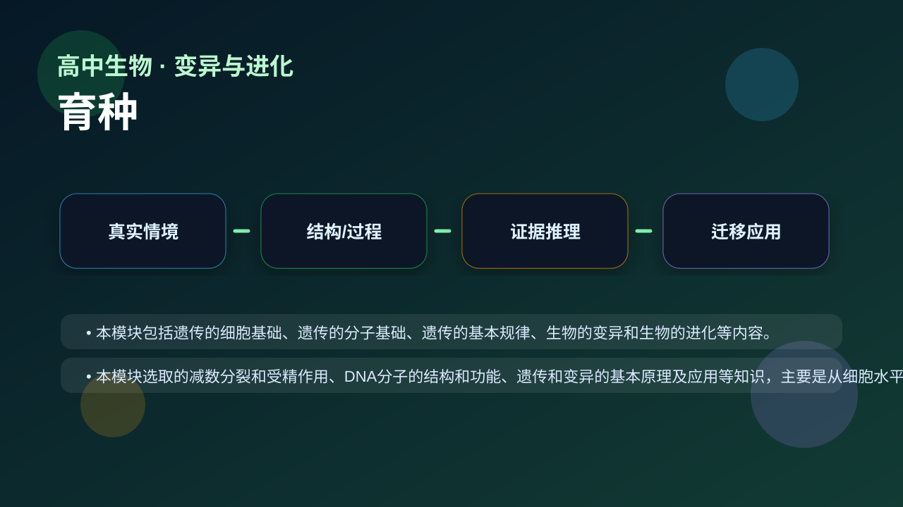
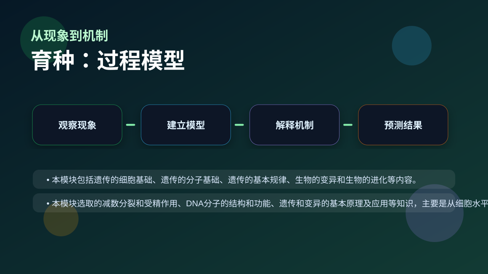
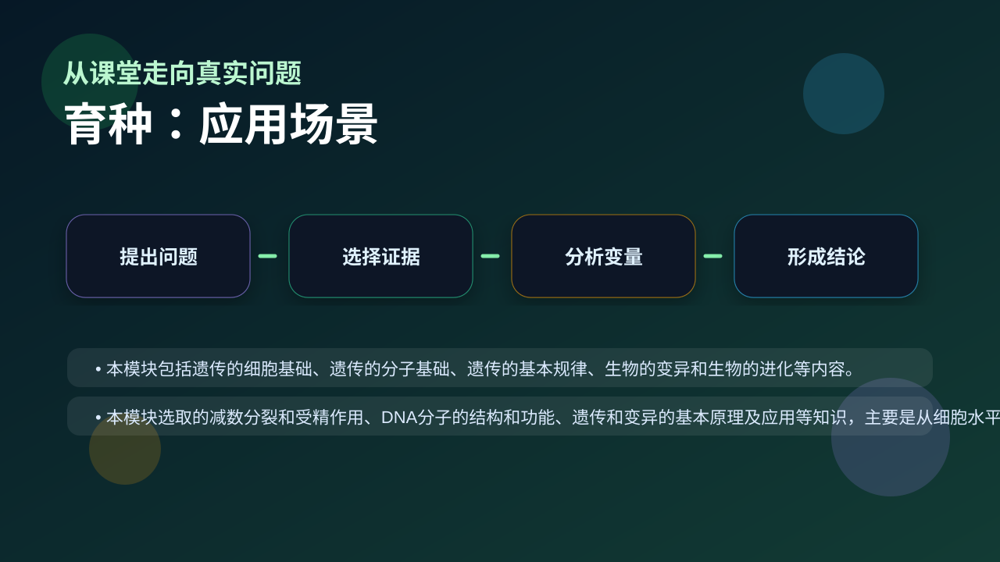

Gallery v1.0.0 · skill v7.14
个体差异怎样在环境选择下变成种群层面的改变？

已经知道：你已经会背一些生物学名词，也见过实验现象、曲线和图示。
但问题是：高中生物真正考查的是能否在新情境中说明变量、机制和证据，而不是复述一句定义。
所以学：本课把 育种 放进一个研究员式的真实任务：先看现象，再拆机制，最后用证据完成解释。
先选一个卡点。后面的例子、互动和 AI 学伴都会围绕它给你最小提示。
选择或输入后，本课会围绕你的问题展开。
学习 育种 前，先判断：一个合格的生物学解释，是否只要说出名词定义就够了？
现象入口：农业生产中会利用杂交、诱变、单倍体育种或基因工程获得新品种。
机制解释：育种本质是创造或组合遗传变异，再通过选择固定有利性状。
证据抓手：证据来自亲本性状、后代表型比例、染色体倍性和分子检测。
变量线索：亲本基因型、变异来源、选择压力、育种周期和目标性状。做题时先找变量，再判断机制，最后写证据。
本模块包括遗传的细胞基础、遗传的分子基础、遗传的基本规律、生物的变异和生物的进化等内容。
本模块选取的减数分裂和受精作用、DNA分子的结构和功能、遗传和变异的基本原理及应用等知识，主要是从细胞水平和分子水平阐述生命的延续性；

先描述题干现象或数据变化。
区分结构、过程、变量和层级。
用机制说明为什么会这样。
换情境预测结果并给证据。
情境：单倍体育种先获得单倍体再加倍，可快速得到纯合体。
作答路径：第一句写可观察现象，第二句写本课机制，第三句写证据或变量关系。例如先说明“题干中哪个指标变化”，再说明“这个变化对应哪个结构或过程”，最后补上“为什么这个证据能支持结论”。
评分提醒：只有结论没有证据，通常只能得到识记分；能把 育种 和变量关系连起来，才是高中生物的解释性答案。
用 PhET 观察环境压力如何改变种群中不同表型个体的比例，再讨论它和 育种 的关系。
💡 操作提示：改变环境、捕食者或突变条件，记录种群数量曲线，判断哪些变化是个体层面，哪些是种群层面。
拖动滑块模拟 亲本基因型、变异来源、选择压力、育种周期和目标性状 的改变，观察系统响应曲线。请把曲线变化翻译成 育种 的机制解释。
拖动滑块后，解释变量如何影响结果。
把所有育种方法都说成杂交，忽略变异来源和选择过程。
只说“增加/减少”不够，要写清改变的是 亲本基因型、变异来源、选择压力、育种周期和目标性状 中的哪一个。
没有实验现象、曲线趋势或结构证据，答案就像猜测。
判断题：只要背出 育种 的定义，就能解决相关实验探究题。
错因诊断：如果答案只有一个名词，说明你还停留在识记层。真正的理解必须能解释“为什么”、预测“如果条件改变会怎样”，并能指出证据来自哪里。
视频用语音和动态画面回顾本课主线：问题情境 → 机制模型 → 证据判断 → 迁移应用。

比较杂交育种、诱变育种和基因工程育种，要看速度、精确度和风险。
提交后会检查你的解释是否包含现象、机制和变量。
如果学生只说出概念名称，继续追问：题干里哪个证据最关键？这个证据对应分子、细胞、个体还是生态系统层级？如果改变 亲本基因型、变异来源、选择压力、育种周期和目标性状 中的一个条件，结果会怎样？这三问能把答案从背诵推进到科学解释。
用一句话说清 育种 的核心机制，必须包含“变量”和“结果”。
给一个实验或曲线，判断哪条证据支持你的解释。
换到健康、农业、生态或生物技术情境，设计一个可检验的问题。
下面哪一种答案最符合高中生物的科学解释要求？
学习小结：育种 的关键不是记住一个孤立词，而是能把生命现象放进层级、机制和证据的框架中解释。下次遇到陌生题，先问：变量是什么？机制在哪里？证据支持哪一步？
育种是指通过人为干预，选择、培育和改良动植物品种的过程。其核心目标是获得具有优良性状（如高产、抗病、耐旱）的新品种。例如，水稻育种家袁隆平通过杂交育种技术培育出高产杂交水稻，显著提高了粮食产量。育种方法包括选择育种、杂交育种、诱变育种和基因工程育种等。选择育种是最传统的方法，如农民每年保留颗粒饱满的小麦种子用于来年播种；而基因工程育种则通过直接修改生物DNA实现精准改良，如抗虫棉的培育。理解育种概念需明确：1. 育种是定向的人工选择；2. 需多代持续筛选；3. 不同方法适用于不同目标。
选择育种基于‘适者生存’的自然选择原理，通过人工选择保留符合需求的个体。其关键步骤包括：群体变异观察→目标性状筛选→优良个体繁殖。典型例子是家犬的驯化——人类从狼群中选择温顺、护主的个体进行多代繁殖，最终形成数百个犬种。在作物中，选择育种常表现为‘单株选择法’：如大豆育种者从田间筛选结荚多的植株，单独收获种子次年种植，经5-7代可获得稳定品系。需注意：1. 选择育种依赖自然变异，改良幅度有限；2. 周期较长（通常需5年以上）；3. 可能出现近交衰退现象。现代玉米品种‘先玉335’就是通过连续14代选择育成的高产品种。
杂交育种通过不同品种间的有性杂交，结合双亲优良性状。操作流程包括：亲本选配→去雄授粉→F1代鉴定→后代系统选育。经典案例是‘杂交水稻之父’袁隆平发现野生雄性不育稻株，通过‘三系配套’技术实现大规模制种：不育系（母本）×保持系→繁殖不育系；不育系×恢复系→生产杂交种。关键技术要点：1. 亲本选择需性状互补（如抗病×高产）；2. 杂交前需人工去雄防止自花授粉；3. F2代开始出现性状分离，需连续多代选择。小麦品种‘矮抗58’就是通过‘偃展1号’与‘周麦16’杂交育成，兼具抗倒伏和高产特性。
诱变育种利用物理/化学因素诱导基因突变，创造新变异类型。常用方法包括：γ射线辐射（如航天育种）、EMS化学诱变剂处理等。我国‘鲁原502’小麦就是通过γ射线辐射‘济南17号’育成，比原品种增产15%。操作流程：处理种子→M1代种植（不选择）→M2代开始筛选突变体→稳定性测试。典型案例还有：1. 日本用X射线诱变育成无籽西瓜；2. 荷兰用中子辐射获得花色变异的郁金香新品种。注意事项：1. 突变具有随机性，需大规模筛选；2. 多数突变有害，需建立高效筛选体系；3. 辐射剂量需精确控制（如小麦种子常用200-300Gy）。
单倍体育种通过花药/花粉培养获得单倍体植株，再经染色体加倍快速获得纯系。其优势在于：1. 缩短育种周期（常规需6-8代，单倍体仅2代）；2. 提高选择效率。我国‘京花1号’小麦就是通过花药培养育成的首个冬性品种。关键技术环节：1. 花粉发育时期选择（单核靠边期最佳）；2. 培养基配方优化（如添加2,4-D诱导愈伤组织）；3. 秋水仙素处理加倍染色体。烟草‘革新1号’品种通过此技术将育种周期从7年缩短至2年。限制因素包括：1. 基因型依赖性（茄科作物易成功，禾本科较难）；2. 白化苗现象（水稻花培中约30%植株叶绿素缺失）。
分子标记辅助选择（MAS）利用DNA标记追踪目标基因，实现早期精准选择。常用标记类型：SSR（微卫星）、SNP（单核苷酸多态性）等。应用场景：1. 抗病基因聚合（如将3个稻瘟病抗性基因Pi1/Pi2/Pi9导入同一品种）；2. 隐性性状选择（如玉米油分含量需破坏性检测，而标记可在苗期鉴定）。典型案例：中国农科院利用MAS技术将Xa21等4个白叶枯病抗性基因导入‘中优早’水稻，育成‘中组1号’。操作流程：建立遗传图谱→开发紧密连锁标记→群体基因型检测→标记辅助回交。需注意标记与目标基因的遗传距离（最好<5cM）及检测成本控制。
转基因育种通过外源基因导入赋予生物新性状，但需严格评估生态与食品安全风险。以抗虫Bt棉花为例：1. 环境安全评估包括：Bt蛋白对非靶标昆虫（如蜜蜂）的影响、基因漂移可能性；2. 食用安全需检测：急性毒性、致敏性、营养组分变化。我国实行分级管理：实验研究（Ⅰ级）→中间试验（Ⅱ级）→环境释放（Ⅲ级）→生产性试验（Ⅳ级）→安全证书。黄金大米通过导入psy/crtI基因提高β-胡萝卜素含量，但因其为口粮作物，各国审批尤为谨慎。育种者需遵循：1. 实质等同性原则；2. 逐步推进原则；3. 全程追溯制度。
现代育种常采用多技术集成策略：1. 传统杂交+分子标记（如‘中麦175’小麦通过杂交结合MAS筛选抗条锈病基因）；2. 诱变+组织培养（日本用γ射线处理柑橘愈伤组织获得无核品种）；3. 基因编辑+单倍体育种（CRISPR编辑玉米株高基因后快速加倍获得纯系）。设计育种方案需考虑：1. 目标性状遗传基础（质量性状宜用MAS，数量性状需GS）；2. 成本效益比（大宗作物可投入高通量技术）；3. 品种适应性（如干旱区优先考虑根系性状）。中国‘海水稻’项目就是通过杂交、耐盐筛选、基因组选择等技术协同，实现盐碱地稻作突破。
1. 农民每年挑选最大个的土豆留种属于哪种育种方法？2. 杂交水稻为何不能留种继续种植？3. 太空椒的培育主要利用了何种育种原理？
1. 比较选择育种与杂交育种的优缺点各两点。2. 若需快速获得纯合的抗病小麦品系，你会优先采用哪三种育种技术组合？3. 分析转基因抗虫作物可能引发的生态链影响。
常见错因：认为杂交育种就是转基因。误区根源：混淆不同技术层级（细胞水平vs分子水平）。诊断要点：1. 杂交育种通过有性生殖重组现有基因；2. 转基因需体外DNA操作导入外源基因；3. 杂交后代可自然产生，转基因生物则不能。
设计探究任务：假设你是育种专家，现有一种易感稻瘟病但高产的水稻品种，请设计分阶段育种方案（需包含传统与现代技术），并分析每阶段预期解决的问题与可能风险。